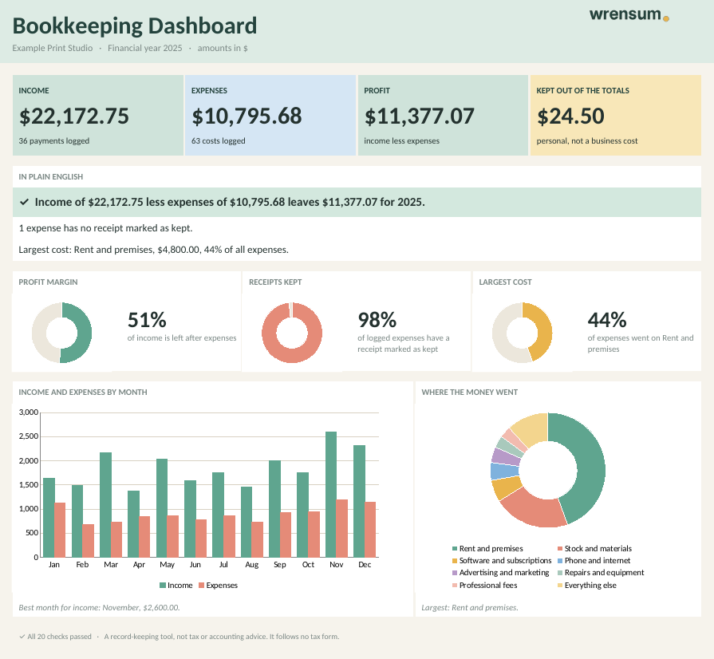
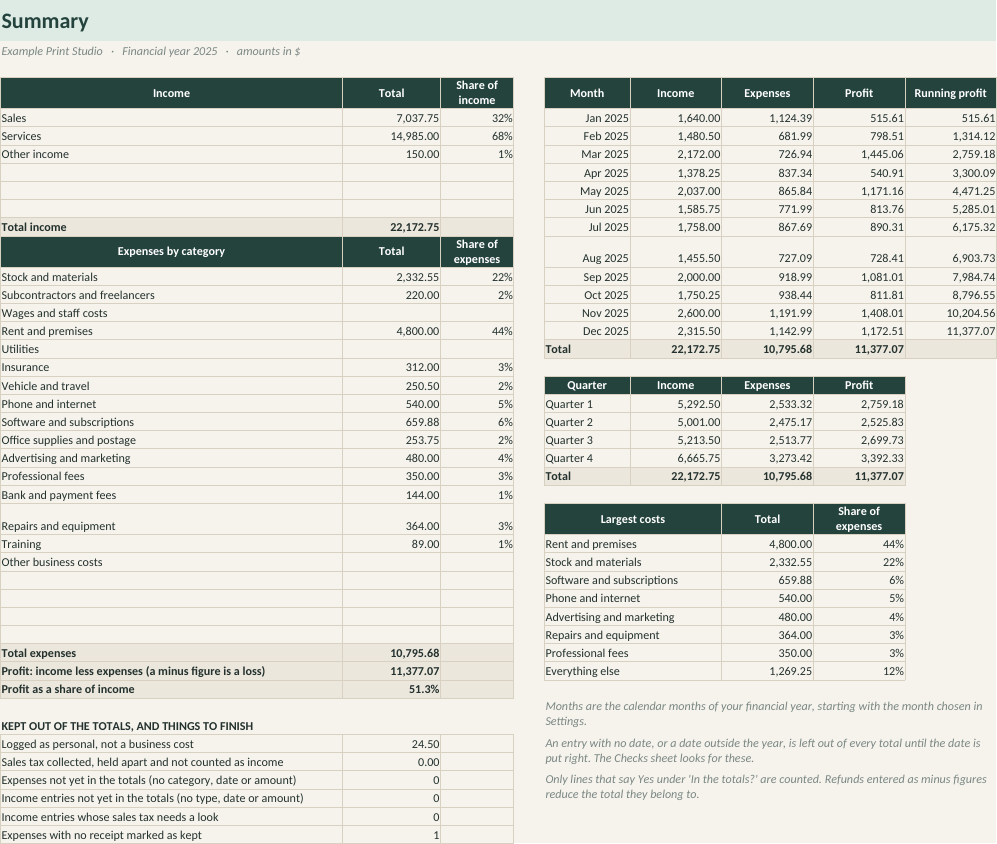
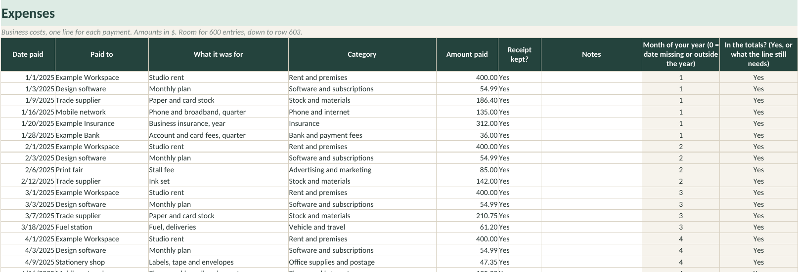
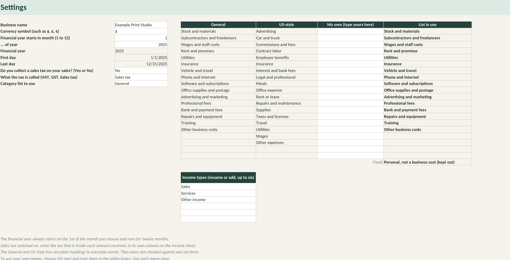

Small Business Bookkeeping Workbook
A bookkeeping spreadsheet for a small business in any country. Log what came in and what went out, and the workbook turns the year into a profit and loss by category, by month and by quarter, in your own currency.
Buy for £12One-off payment. One Excel file (.xlsx), delivered as a download. A record-keeping tool: it follows no country's tax form, works out no tax and is not tax advice.

What you get
- An income log for 400 payments and an expenses log for 600 costs
- Settings for your currency symbol and for the month and year your financial year starts: January, April, July or any other month
- Three category lists to choose from: a general one, one in US spelling, or up to 20 names of your own
- Up to six income types that you can rename, such as sales, services and other income
- A sales tax switch for VAT, GST or sales tax: the tax inside each amount you receive is held apart and not counted as income
- A summary with a profit and loss by category, totals by month with a running profit, totals by quarter and your largest costs
- A column on each log that says Yes when a line is in the totals, or says what the line still needs: a date, a category, an amount
- A category for anything personal paid from the business: logged so the record is complete, kept out of every total
- A dashboard, in light and dark, that gives the year in plain English and counts the expenses with no receipt
- A sheet of 20 checks that looks for common slips: an entry with no category, a date outside the year, an amount typed as text, a sum that has been typed over
Who it is for
Shops, makers, freelancers, trades, market sellers and side businesses who keep their own books and want one file for the year rather than accounting software. It suits any country because it leaves the tax rules out: it adds up what you log and stops there. If you are a UK sole trader and want totals under the box numbers of the tax return, the Sole Trader Bookkeeping Workbook (£12) does that instead.
How to use it
- In Settings, enter your business name, your currency symbol and the month and year your financial year starts, then choose a category list.
- Clear the example rows, then log each payment received on the Income sheet and each cost on the Expenses sheet.
- Choose a type for each payment and a category for each cost from the lists.
- Open the Dashboard for the year in plain English and the Summary for the profit and loss.



Questions
- Which countries does it work for?
- Any, because it holds no country's tax rules. You choose the currency symbol and the month your financial year starts. It keeps one currency in each file.
- Does it work out my tax?
- No. It states no tax rule, rate or deadline and follows no tax form. It adds up income and expenses into a profit and loss. What counts as a business cost where you live is for you to check with your tax authority or an accountant.
- I charge VAT, GST or sales tax. Will it work?
- Switch the sales tax setting on and enter the tax that is inside each amount you receive. That tax is held apart and not counted as income. The file does not work the tax out for you, and it has no column for tax paid on your costs: you enter each cost as the figure you want counted.
- Can I use my own categories?
- Yes. Choose "My own" in Settings and type up to 20 names. The general and US-spelling lists are plain headings in everyday words; they were not checked against any tax form.
- What happens to an entry with no date or no category?
- It is left out of the totals, the line itself says what is missing, and the Checks sheet and the Dashboard both tell you there is something to finish.
- Can I use it for more than one year?
- Yes. Keep a blank copy and save a new copy for each financial year.
- What do I need to open it?
- Microsoft Excel. The file has also been tested in LibreOffice Calc. It contains no macros.
- Are the figures in it real?
- No. It comes with an invented print studio, in dollars, to show the format. You clear the example rows and type your own.
Free to use first
The break-even calculator shows how many sales a month cover your costs, and the markup and margin calculator works out a price from your costs and the margin you want.